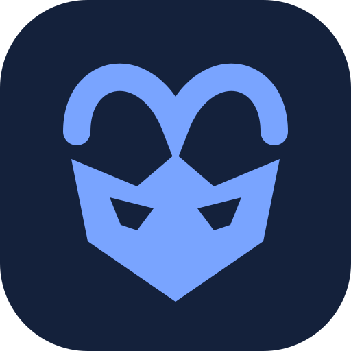
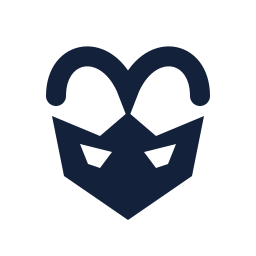

A推荐优先考虑

Wukong悟空
灵眸蓝白 Cobalt
金箍双弧 + 几何灵眸
清爽、可信、轻盈。更适合日常使用与大众传播。
#2457D6小尺寸

Wukong你的 Android 助手
预览版把这件事，
交给悟空。
说清楚目标，悟空可以跨应用帮你完成。
手机已连接
从一件有用的事开始
选一件事，补充你的需求。
买东西，先比价 ↗
今晚吃什么 ↗
安排一次周末出游 ↗
你想做什么
帮我比较想买的耳机，
在不同平台的价格
在不同平台的价格
继续准备
普通操作自动执行，敏感操作需你确认。
任务历史日志设置
Wukong模型配置
连接你的模型
选择服务商，填入你自己的 API Key。
模型服务商
DeepSeek ⌄
deepseek-flash
前往 API 平台获取 Key ↗
API Key
粘贴平台生成的 API Key
使用你自己的服务商账号及 API 余额。
密钥加密保存在手机上。
高级配置 ＋
所有方案均需用户自行配置 API Key。